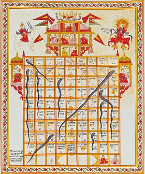

Snakes and Ladders (or Chutes and Ladders) is an ancient Indian board game regarded today as a worldwide classic.It is played between two or more players on a gameboard having numbered, gridded squares. A number of "ladders"nd "snakes" (or "chutes") are pictured on the board,each connecting two specific board squares. The object of the game is to navigate one's game piece, according to die rolls,from the start to the finish, helped or hindered by ladders and snakes, respectively. The historic version had root in morality lessons, where a player's progression up the board represented a life journey complicated by virtues (ladders) and vices (snakes).

© Gopi Krishna Srungarapu